Kuvayı inzibatiyyenin sadece damat Ferit paşanın maktullüğü olduğu ve padişahın onun önüne geçememesi 📚 Şahbaba, s.179
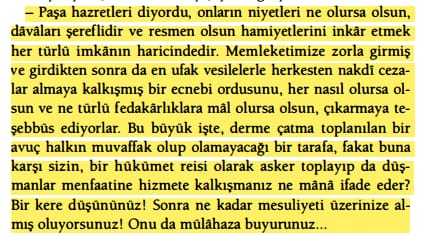
İsmail Hakkı Okdayın rıza tevfiki kuvayı inzibatiyyenin kuvayı milliye ye karşı olacağı haberini alınca damat feriti uyarması 📚 Rıza tevfik, Birazda ben konuşayım, s.108
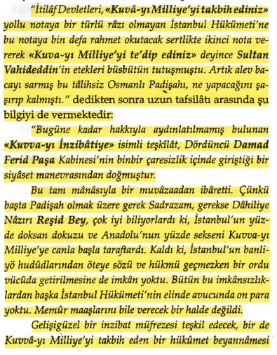
📚 Tarık Mümtaz Göztepe,Mütareke Gayyasında,s.268-269
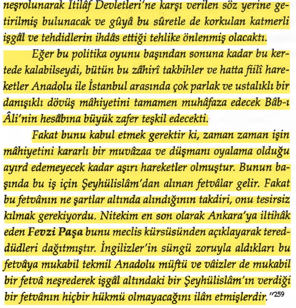
2.belgesi
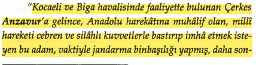
1.belgesi
📚 Hüsamettin Ertürk, İki Devrin Perde arkası, s.391-392
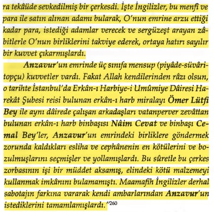
2.belge
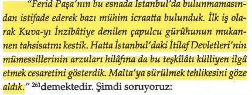
📚Cemil Topuzlu,Seksen Yıllık Hatıralarım, s.203
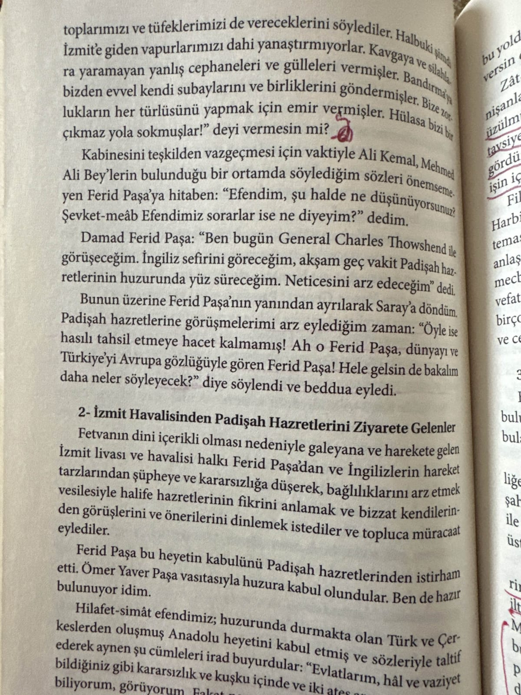
Ahmed Avni paşanın Kuvay-i inzibatiye görüşü Ve Damat Ferid paşanın İfadeleri 📚Vahideddin’in Sırdaşı Avni Paşa Anlatıyor, s.234-235-236
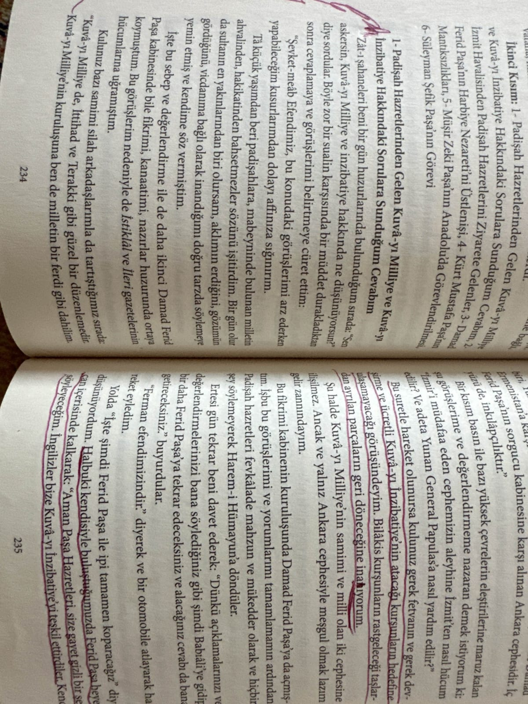
2.belgesi
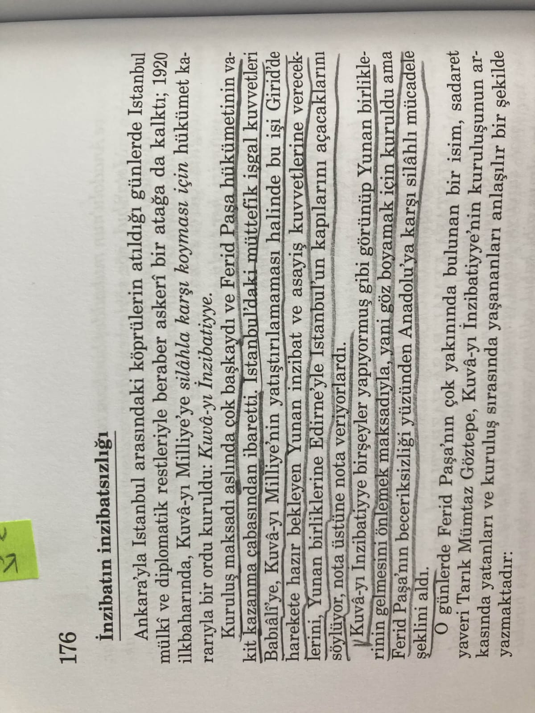
Murat bardakçının İnzibatiye Hakkındaki Beyanı 📚Şahbaba s.176
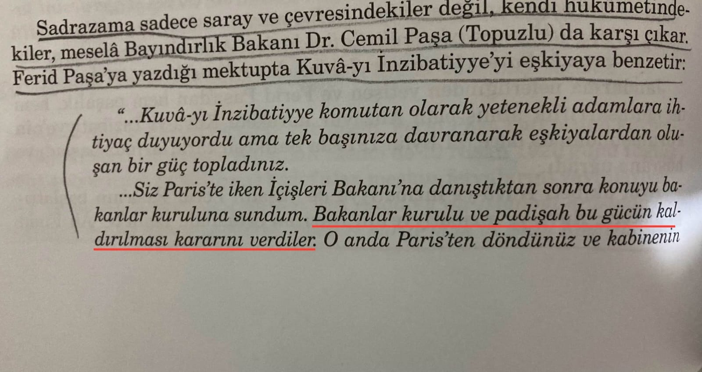
Yine Cemil topuzludan Ferit paşa Paris’e gitttikten sonra bir kurulun toplandığı ve bu kurul ve padişah tarafından inzibatiyyenin kapatılmasına karar verildiği lakin damat Ferit paşa geri geldiğinde yeniden kurması
📚Salahi Sonyel, İngiliz İstihbaratı, s.98
Bkz.Şahbaba, s.178-179
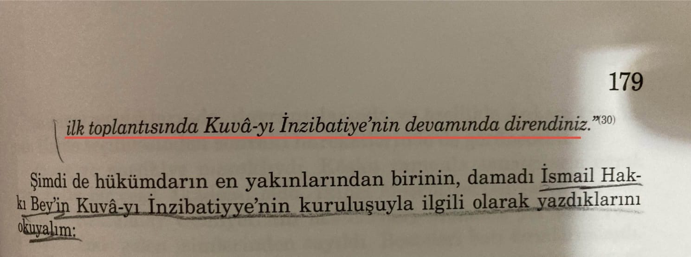
2.belgesi
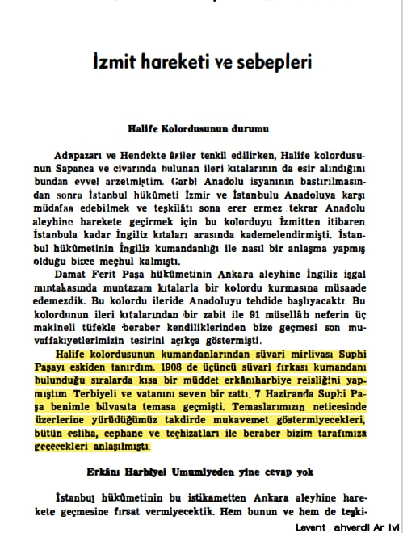
📚 Ali Fuat Cebesoy, Milli Mücadele Hatıraları, s.409
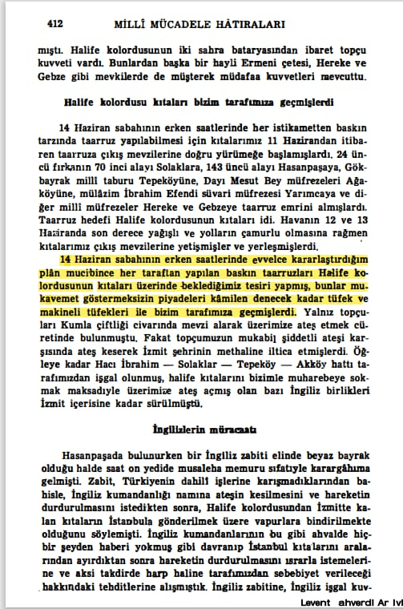
📚 Ali Fuat Cebesoy, Milli Mücadele Hatıraları, s.412
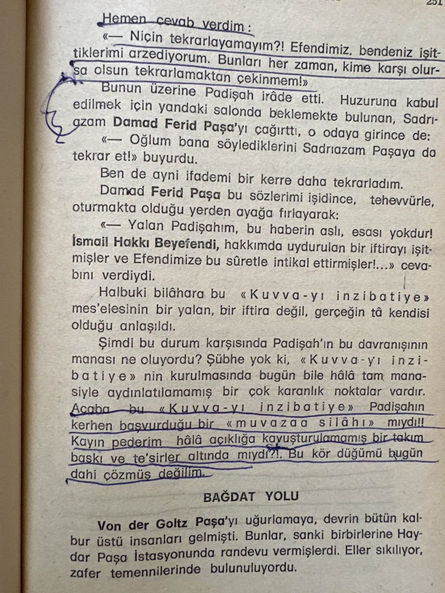
İsmail Hakkı Okdayın Padişahın İnzibatiye Meselesine Dahil Olmadığı Hususundaki Düşünceleri 📚Yanya’dan Ankara’ya, s.249-251
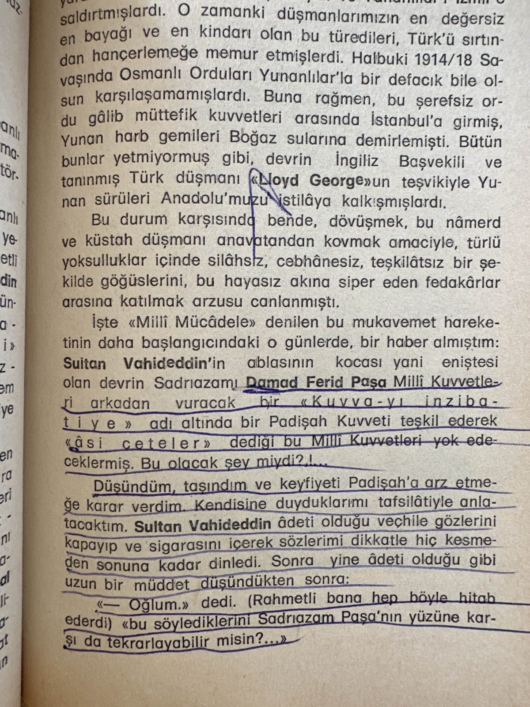
2.belgesi
İsmail Hakkı Okdayın Padişahın İnzibatiye Meselesine Dahil Olmadığı Hususundaki Düşünceleri 📚Yanya’dan Ankara’ya, s.249-251
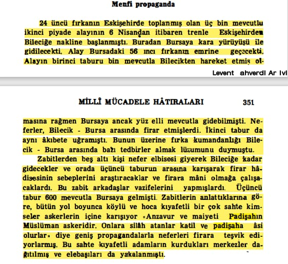
📌 *Anzavur ordusunun Kara Propagandası Ve Ordunun Firar edenleri.* 📚 Ali Fuat Cebesoy, Milli Mücadele Hatırları, s.350-351
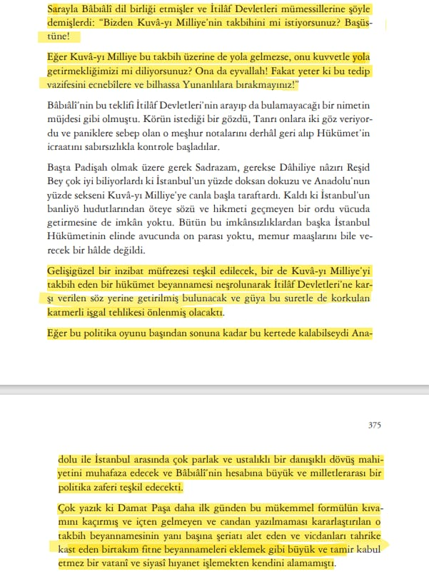
📚 Tarık Mümtaz Göztepe, Mütareke Günleri, s.374-375
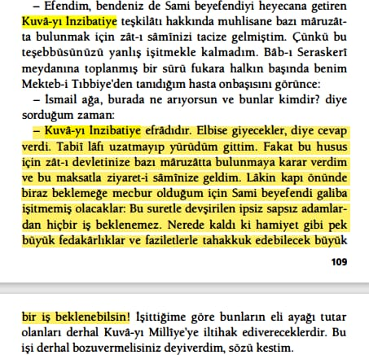
📌 *İnzibatiye ordusunun beceriksiz, ipsiz sapsız bir devşirme topluluğu olması.* 📚 Rıza Tevfik, Biraz da Ben Konuşayım, s.109
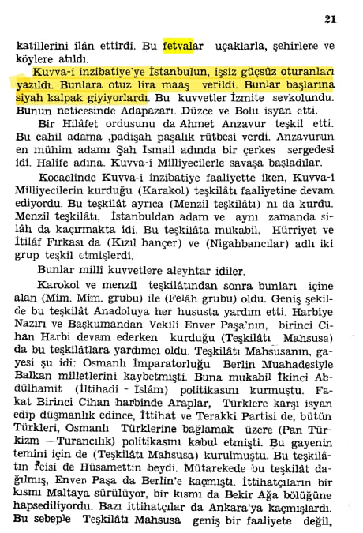
📚 Enver Behnan Şapolyo, Milli Mücadelenin İç Alemi, s.21
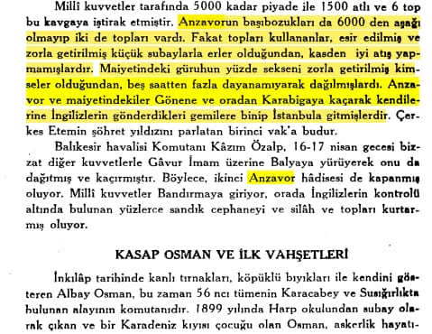
📚 Rahmi Apak, İstiklal Harbinde Garp Cephesi Nasıl Kuruldu, TTKY, s.129
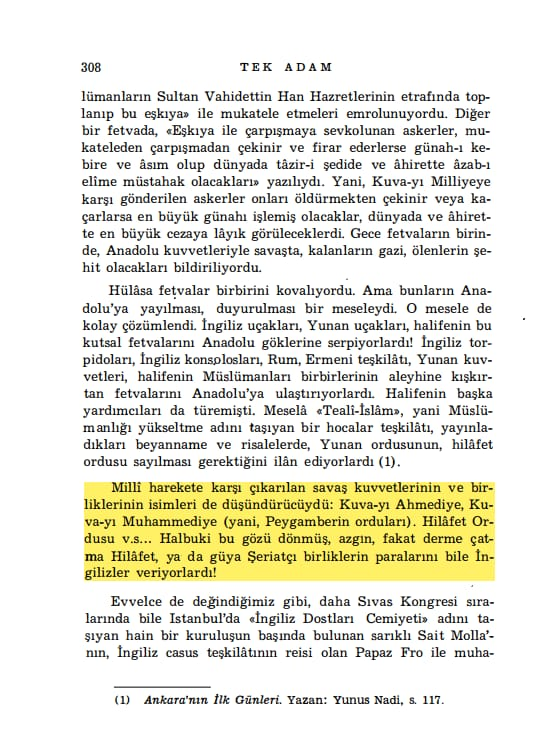
📌 *Halbuki bu gözü dönmüş, azgın, fakat derme çatma Hilafet, ya da güya şeriatçı birliklerin paralarını bile İngilizler veriyorlardı!* 📚 Şevket Süreyya Aydemir, Tek Adam, C.2, s.308
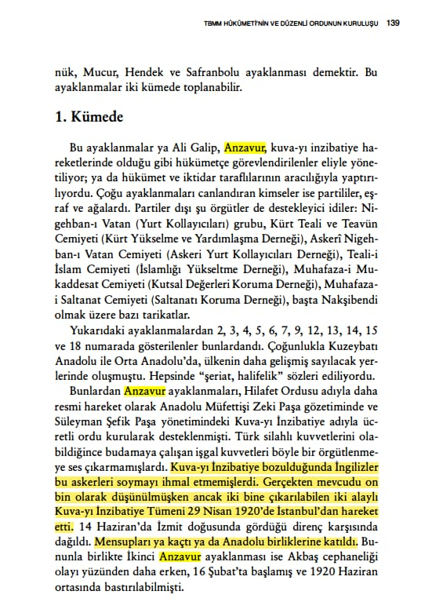
📚 Celal Erikan, Kurtuluş Savaşı Tarihi, s.139

📚 Yunus Nadi, Birinci Büyük Millet Meclisi, s.13
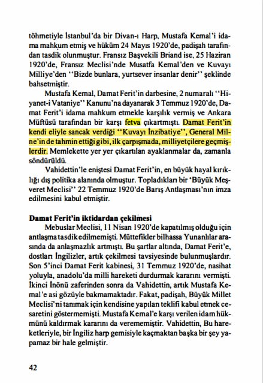
📚 Tevfik Bıyıklıoğlu, Atatürk Anadolu'da, s.42
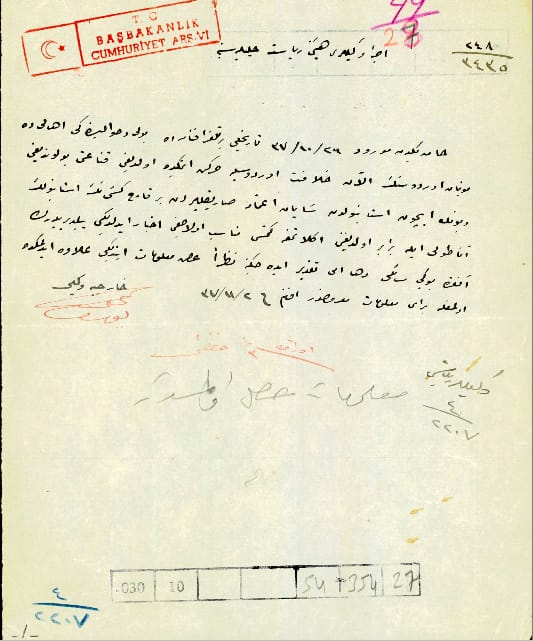
📌 *Hilafet ordusu ile Yunan ordusunun birlikte hareket ettiğine inanan Bolu halkının bu yanlış düşüncelerini silmek için alınacak tedbir.* 📚 Cumhuriyet Arşivi, 30-10-0-0, no.54-354-27
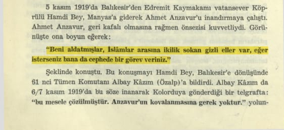
📌 *Beni aldatmışlar, İslamlar arasına ikilik sokan gizli eller var.* 📚 Milli Savunma Bakanlığı,Türk İstiklal Harbi İç Ayaklanmalar, s.68
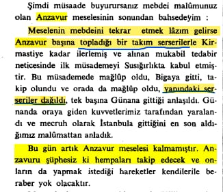
📌 *Başına Topladığı bir Takım Serseriler.* 📚 Türkiye Büyük Millet Meclisi Zabıt Ceridesi, Dönem 1, Cild 4, Içtima 8, sayfa 7, 1.5.1336
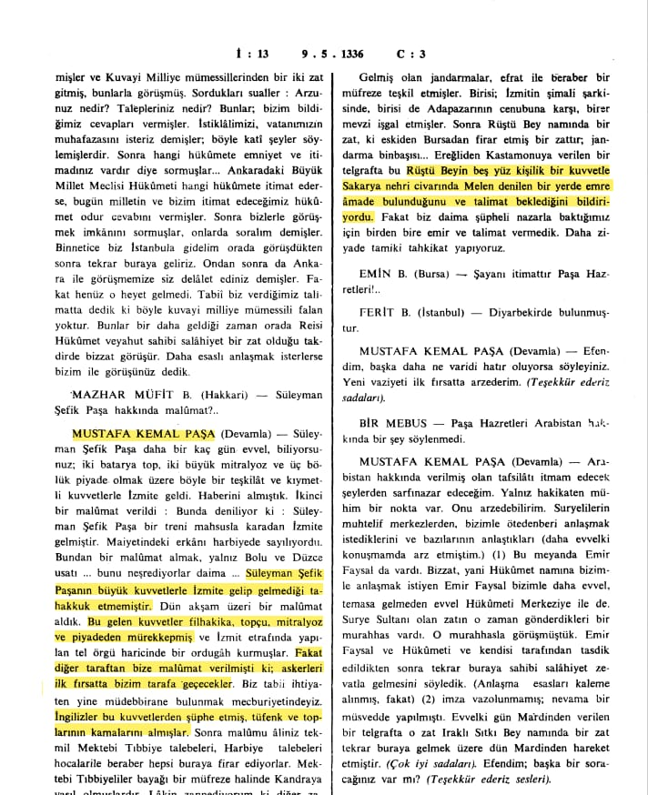
📌 **Süleyman Şefik Paşanın büyük kuvvetlerle İzmite gelip gelmediği tahakkuk (Gerçekleşmemiştir.) etmemiştir.** 📚 Türkiye Büyük Millet Meclisi Zabıt Ceridesi, Dönem 1, Cild 3, Içtima 13, sayfa 24, 9.5.1336
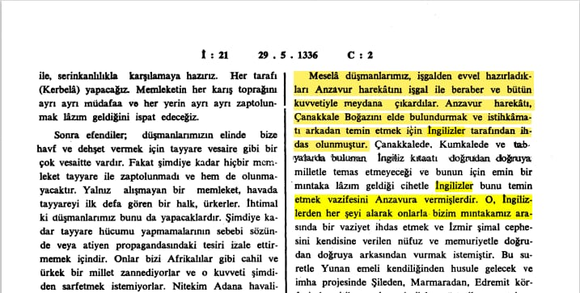
📌 *İsmet İnönünün Anzavuru İngilizlerin oluşturduğunu söylemesi.* 📚 Türkiye Büyük Millet Meclisi Zabıt Ceridesi, Dönem 1, Cild 2, Içtima 21, sayfa 41, 29.5.1336
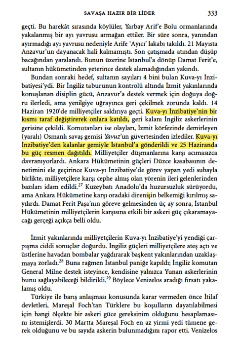
📚 Andrew Mango, Atatürk, s.333
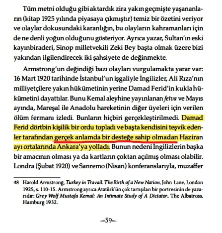
📌 *İnzibatiye ordusu ingilizlerin öylesine ortaya attığı değersiz bir plandır.* 📚 Riccardo Mandelli, Son Sultan, Timaş Yayınları, s.59<
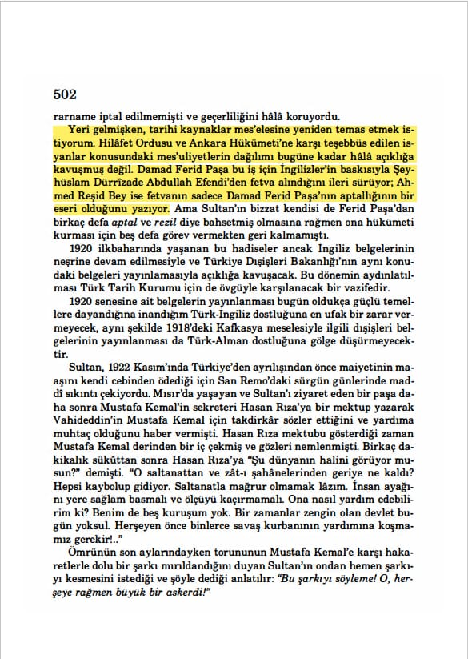